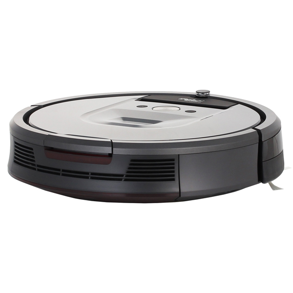
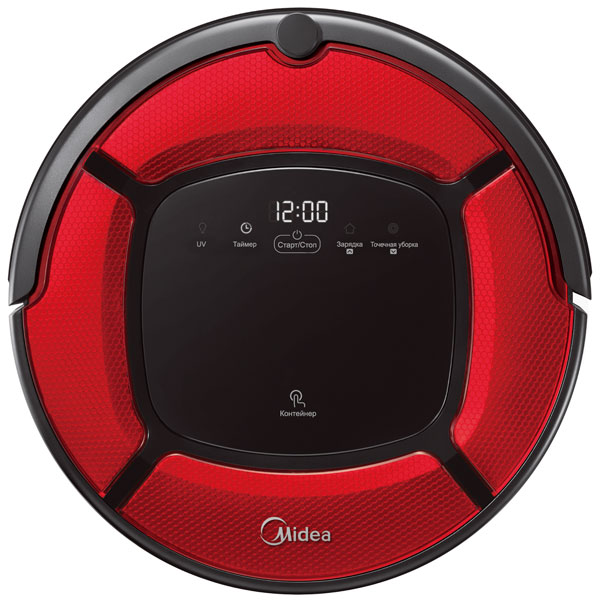
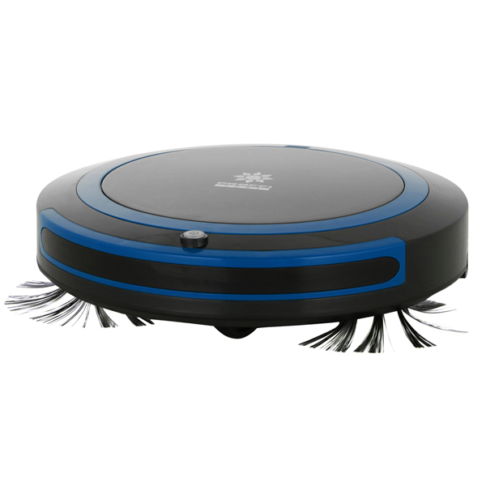

КАТАЛОГ:

Робот пылесос VC iRobot Roomba 980 обеспечивает качественную сухую уборку в автоматическом режиме. Устройство может использоваться для
очистки от мусора и загрязнений ковровых покрытий, паркета, плитки и линолеума.
Робот-пылесос VR iRobot Roomba 980

Робот-пылесос Midea MVCR03 оснащён щёткой из микрофибры, которая легко справляется с пылью, стойкими загрязнениями, шерстью домашних животных и прочим мусором. Сбор выполняется в специальный пластиковый контейнер —доступ к нему
можно получить, просто нажав на крышку устройства.
Робот-пылесос Midea MVCR03

Робот-пылесос Proffi PH8964 может работать в режимах сухой и влажной уборки. Он эффективно собирает пыль, крошки, волосы, шерсть домашних животных и прочий мусор и с гладких покрытий, например, кафельной плитки и линолеума,
и с ковров с коротким ворсом высотой до полутора сантиметров.
Робот-пылесос Proffi PH8964